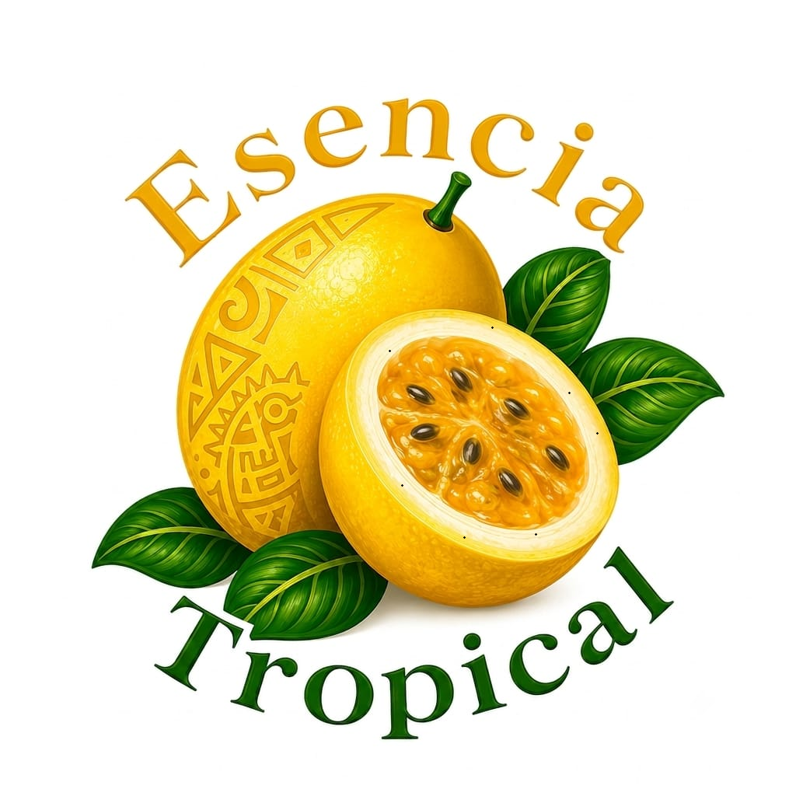
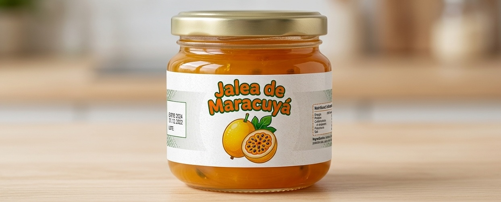
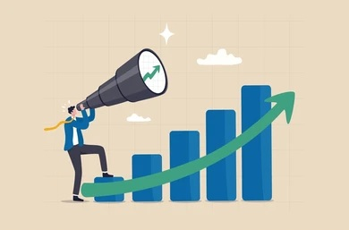
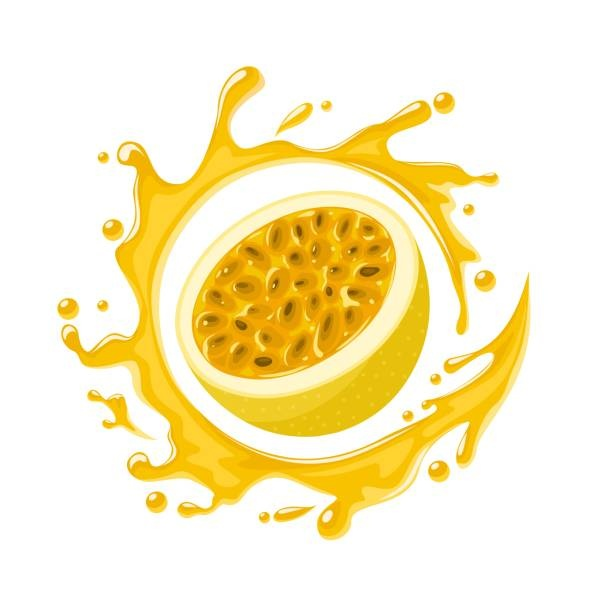

Esencia Tropical
Productos y Servicios
Conoce nuestros productos naturales elaborados con maracuyá. Nuestro producto principal es la jalea natural, pero el sitio está preparado para incorporar nuevos productos en el futuro.

Jalea Natural de Maracuyá
Elaborada con pulpa natural de maracuyá cuidadosamente seleccionada. Ideal para acompañar pan, galletas, postres o preparar recetas artesanales.
Disfrute y Saboree al Máximo

Próximo Producto
Área destinada para futuros productos y servicios relacionados con el emprendimiento.
Editar
Próximo Producto
Área destinada para futuros productos y servicios relacionados con el emprendimiento.
Editar
Próximo Producto
Área destinada para futuros productos y servicios relacionados con el emprendimiento.
Editar
Servicios
Además de ofrecer productos naturales elaborados a base de maracuyá, brindamos diferentes servicios para nuestros clientes.
Asesoría al Cliente
Orientamos a nuestros clientes para que puedan elegir el producto que mejor se adapte a sus necesidades.

Pedidos Personalizados
Se elaboraran pedidos de acuerdo con la cantidad solicitada por nuestros clientes.
Atención Empresarial
Tenemos propuesto a futuro atender pedidos para empresas, comercios y eventos especiales.
¿Los productos son naturales?
Sí. Nuestros productos están elaborados utilizando ingredientes naturales y fruta fresca.
¿Realizan entregas?
Por el momento no contamos con servicios delivery ( a domicilio)
¿Qué otros productos ofrecerán?
Proximamente se van a incorporar nuevos productos a base de maracuyá a nuestro catálogo.